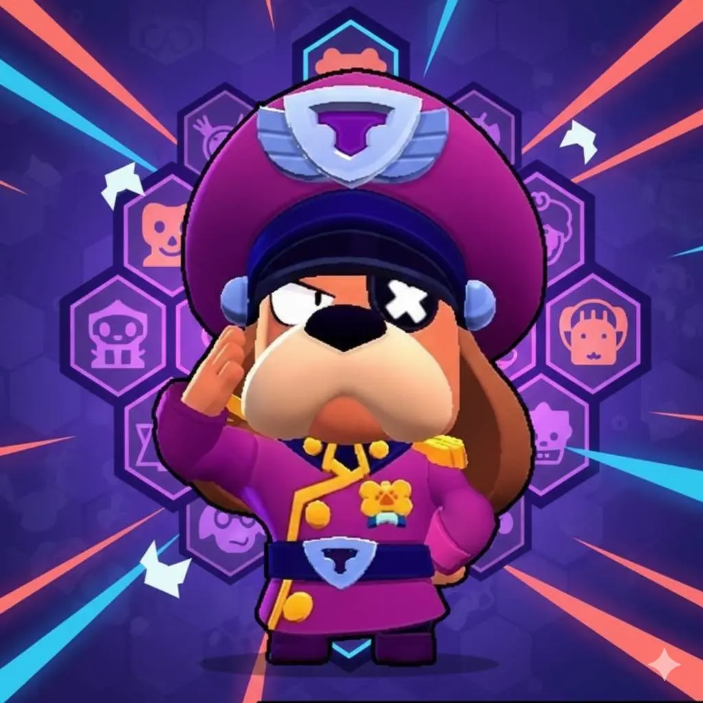
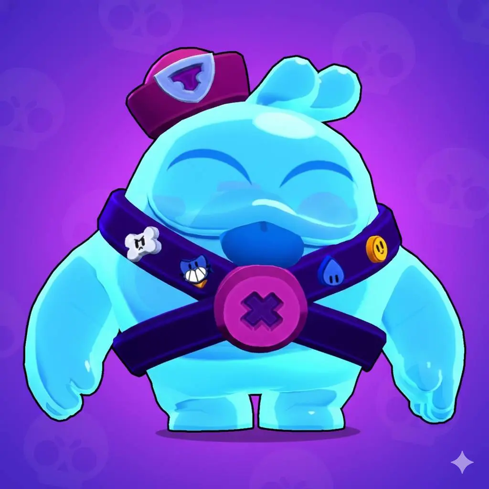
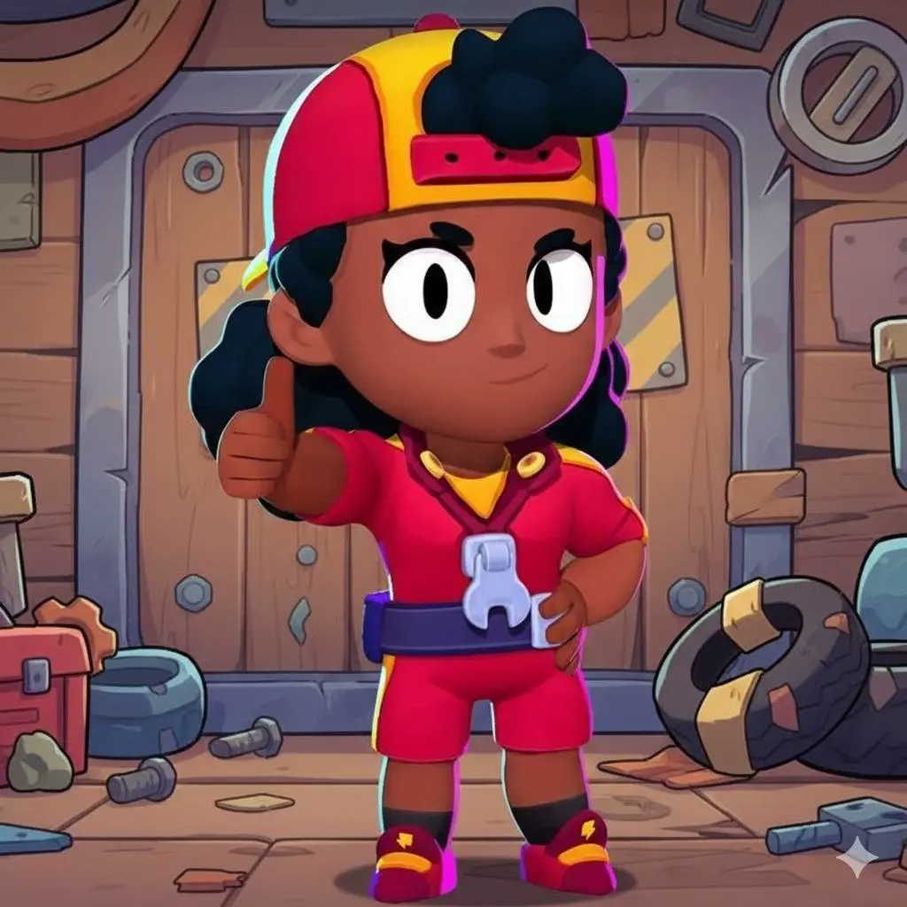
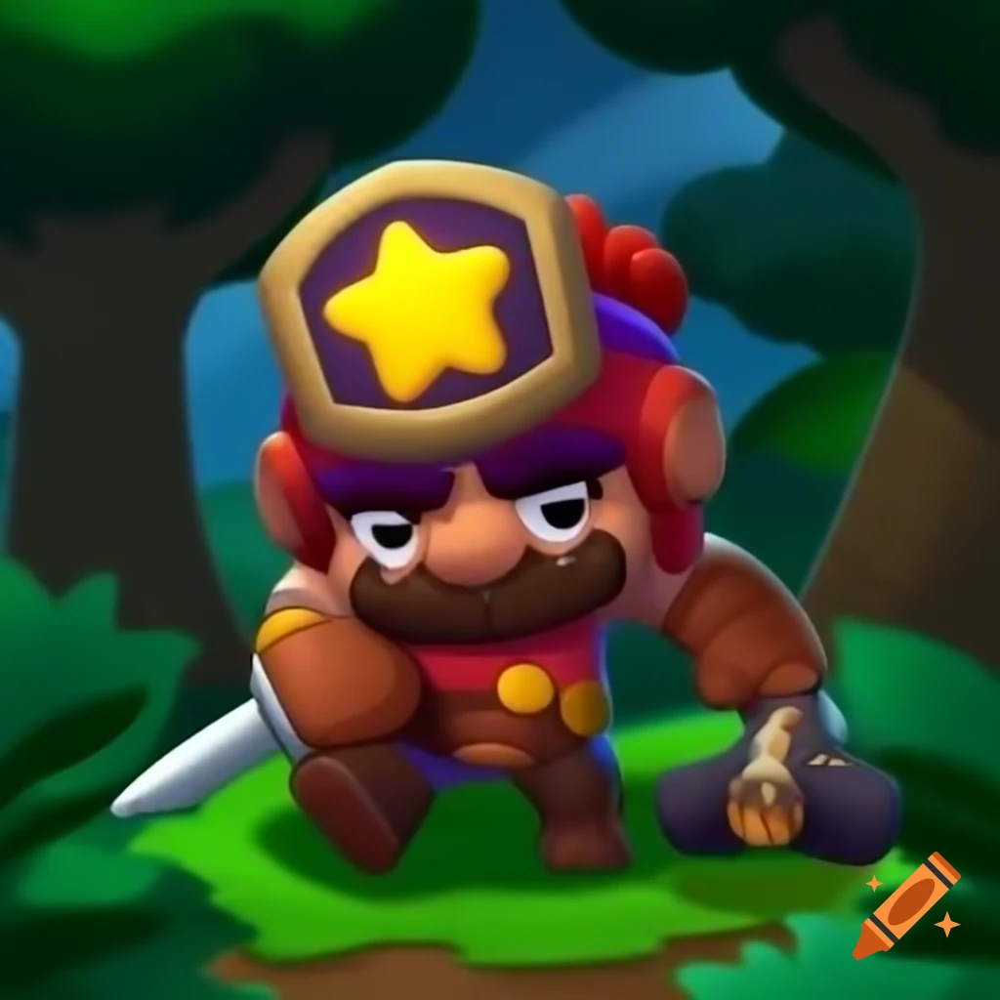
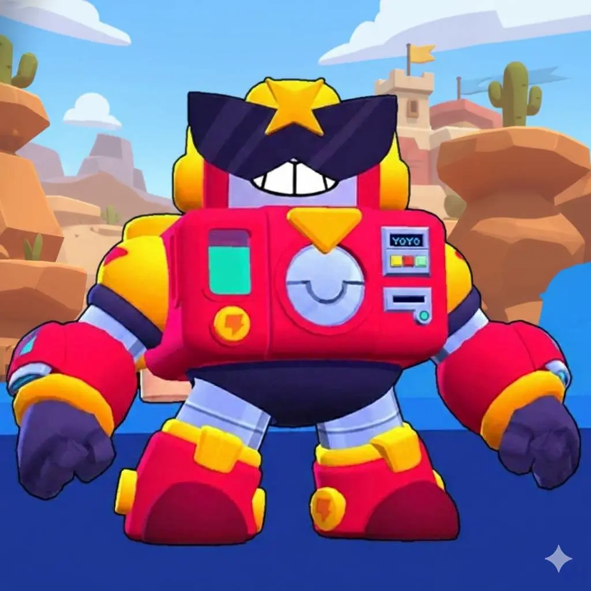
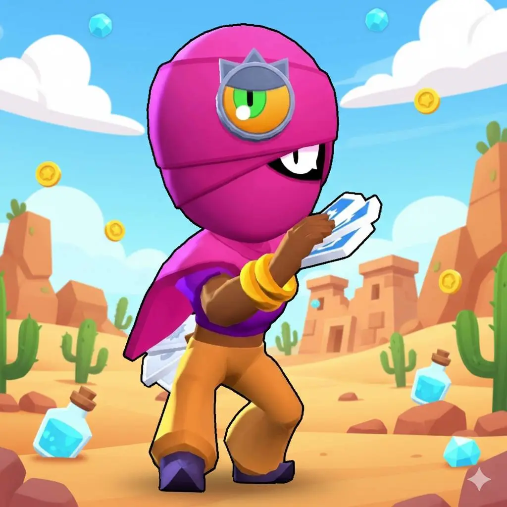
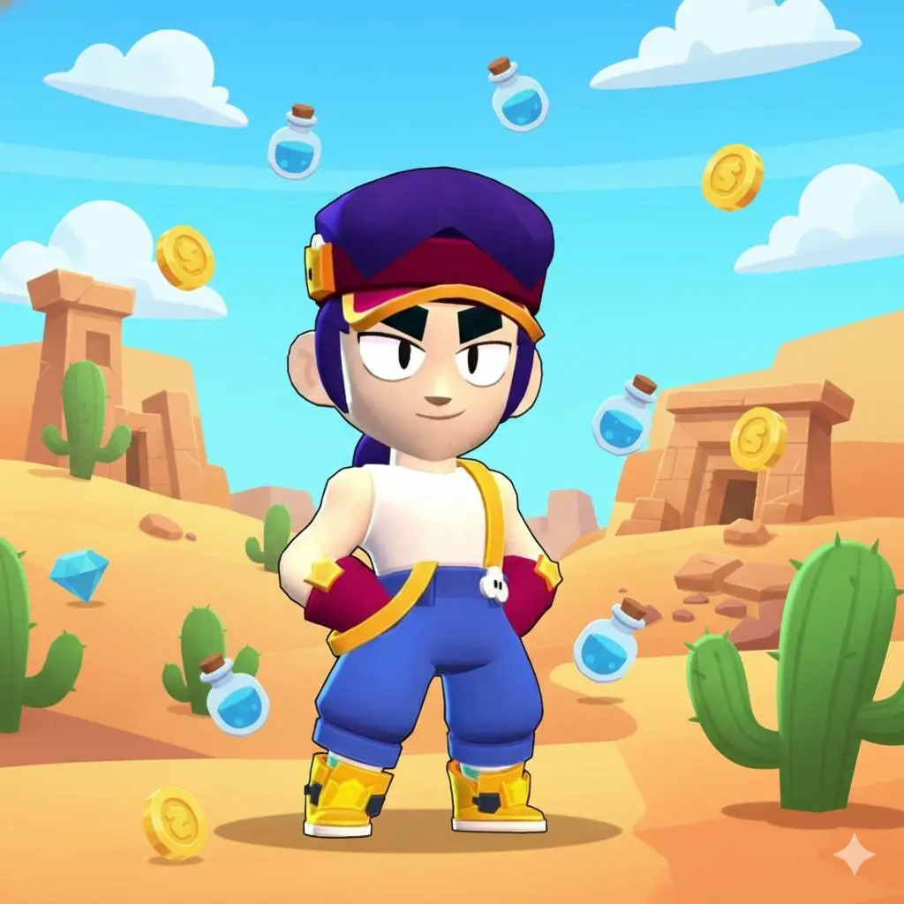
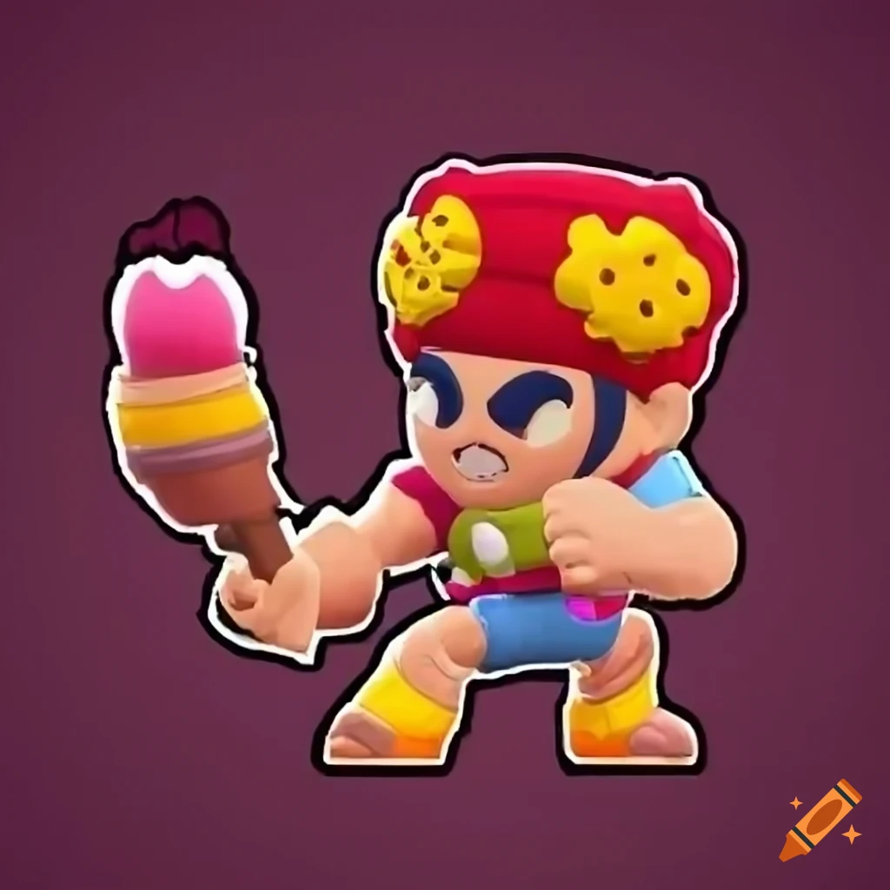
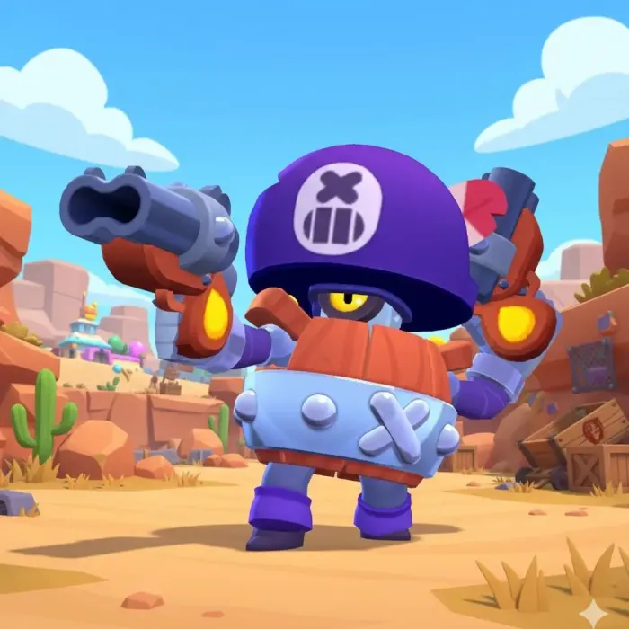

Acerca dos brawlers do jogo
No Brawl Stars, os Brawlers são as personagens jogáveis que os jogadores utilizam nas partidas. Cada Brawler possui ataques, habilidades e características próprias, o que faz com que cada personagem tenha um estilo de jogo diferente. Alguns são mais fortes em combate direto, enquanto outros são melhores para suporte, controlo do mapa ou ataques de longo alcance.
Número de Brawlers atualmente
Após as atualizações mais recentes de 2026, o jogo já ultrapassou 100 Brawlers jogáveis. Esse número foi alcançado com a introdução do personagem Sirius, que marcou o 100.º Brawler do jogo. O número total pode variar ligeiramente porque a Supercell adiciona novos Brawlers regularmente através de atualizações e temporadas do jogo.
Raridades dos Brawlers
Os Brawlers estão divididos em diferentes raridades, que indicam o nível de dificuldade para desbloqueá-los no jogo. As principais raridades são:
Starting Brawler
– Personagem inicial que todos os jogadores recebem (Shelly).Rare
– Relativamente fáceis de desbloquear.Super Rare
– Um pouco mais difíceis de obter.Epic
– Personagens mais raras com habilidades mais complexas.Mythic
– Raridade alta, normalmente com mecânicas únicas.Legendary
– Muito raros e difíceis de desbloquear.Ultra Legendary
– Raridade extremamente rara introduzida mais recentemente.Classes ou tipos de Brawlers
Além da raridade, os Brawlers também podem ser classificados por tipo de combate ou função na equipa, como por exemplo:
Damage Dealers
– Focados em causar muito dano.Tanks
– Possuem muita vida e conseguem aguentar ataques.Marksmen
– Especialistas em ataques de longo alcance.Artillery
– Atacam por cima de obstáculos.Assassins
– Rápidos e fortes contra inimigos isolados.Controllers
– Controlam áreas do mapa.Supports
– Ajudam a equipa com cura ou buffs.Conclusão
A grande quantidade de Brawlers é uma das características mais marcantes de Brawl Stars. Com mais de 100 personagens diferentes, cada uma com habilidades e estilos próprios, os jogadores podem experimentar várias estratégias e encontrar o Brawler que melhor se adapta à sua forma de jogar.
Assim, Brawl Stars tornou-se um dos jogos mobile mais populares da atualidade, destacando-se pela sua jogabilidade acessível, competitiva e divertida.Galeria









